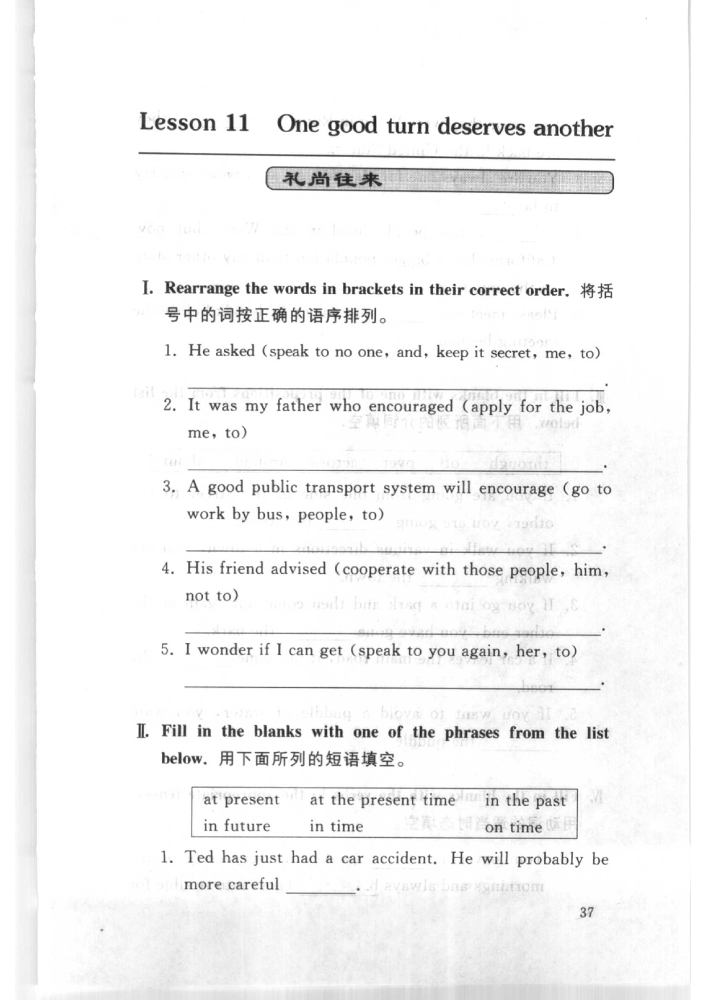
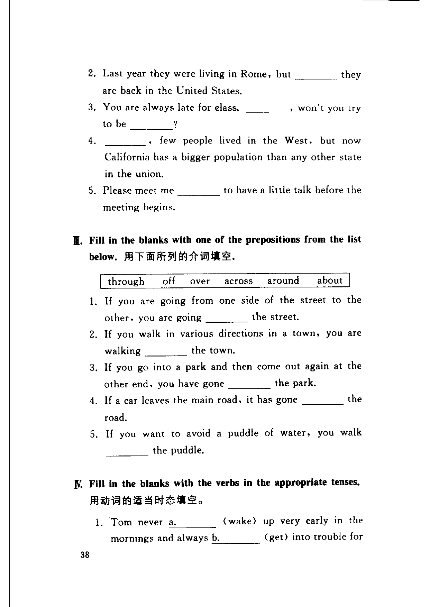

Grammar exercises · 语法练习
I. Rearrange the words in brackets in their correct order.
将括号中的词按正确的语序排列。
-
I. Rearrange — He asked (speak to no one, and, keep it secret, me, to)
-
I. Rearrange — It was my father who encouraged (apply for the job, me, to)
-
I. Rearrange — A good public transport system will encourage (go to work by bus, people, to)
-
I. Rearrange — His friend advised (cooperate with those people, him, not to)
-
I. Rearrange — I wonder if I can get (speak to you again, her, to)
II. Fill in the blanks with one of the phrases from the list below.
用下面所列的短语填空。
at present · at the present time · in the past · in future · in time · on time
-
II. Phrases — Ted has just had a car accident. He will probably be more careful .
-
II. Phrases — Last year they were living in Rome, but they are back in the United States.
-
II. Phrases — You are always late for class. , won't you try to be ?
-
II. Phrases — , few people lived in the West, but now California has a bigger population than any other state in the union.
-
II. Phrases — Please meet me to have a little talk before the meeting begins.
III. Fill in the blanks with one of the prepositions from the list below.
用下面所列的介词填空。
through · off · over · across · around · about
-
III. Prepositions — If you are going from one side of the street to the other, you are going the street.
-
III. Prepositions — If you walk in various directions in a town, you are walking the town.
-
III. Prepositions — If you go into a park and then come out again at the other end, you have gone the park.
-
III. Prepositions — If a car leaves the main road, it has gone the road.
-
III. Prepositions — If you want to avoid a puddle of water, you walk the puddle.
IV. Fill in the blanks with the verbs in the appropriate tenses.
用动词的适当时态填空。
-
IV. Tenses — Tom never a. (wake) up very early in the mornings and always b. (get) into trouble for being late; so one day he c. (go) to town and d. (buy) an alarm clock. To get home he e. (have to) go through a field where a bad-tempered bull usually f. (graze). This g. (annoy) the bull who immediately h. (begin) to chase Tom. Tom i. (bring) an umbrella as it j. (rain) slightly. He k. (throw) the umbrella to the ground and l. (run) away as fast as he could. The bull m. (stop) and n. (begin) to attack the umbrella. While he o. (do) this, Tom escaped.
-
IV. Tenses — When I a. (arrive) at the station yesterday, Mary b. (wait) for me. She c. (wear) a blue dress and d. (look) very pretty. As soon as she e. (see) me she f. (wave) her umbrella and g. (shout) something, but I couldn't hear what she h. (say) because everybody i. (make) such a noise.
-
IV. Tenses — The prisoner (escape) by climbing the wall of the garden where he (work). He (wear) blue overalls and black shoes.
-
IV. Tenses — She said that she (not like) her present flat and (try) to find another.
-
IV. Tenses — I (pump) up three tyres. Would you like to do the fourth?
-
IV. Tenses — It (snow) for three days now. The roads will be blocked if it doesn't stop soon.
-
IV. Tenses — That pipe (leak) for ages. We must get it mended.
-
IV. Tenses — That aeroplane (fly) round the house for the last hour. Do you think the pilot wants to drop a bomb on us?
-
IV. Tenses — He (cough) a lot lately. He ought to give up smoking.
-
IV. Tenses — I (make) sausage rolls for the party all morning.
Original images · 原图对照
Expand a page to compare it with the transcription. Open the original in a new tab to zoom in.
展开原图核对文字，也可以在新标签页打开原图放大查看。
Book page 1 · Exercise I (rearrange, items 1–5) and Exercise II (item 1)
Open original · 打开原图 ↗ Download original · 下载原图


Book page 2 · Exercise II (items 2–5), Exercise III (items 1–5), and Exercise IV (item 1 start)
Open original · 打开原图 ↗ Download original · 下载原图




Your notes and answers
Use this space for longer responses or exercises that do not have an individual answer box.